청소년상담사-1급(2교시)(구) (2016-03-26 기출문제)
1과목: 비행상담
1. 최근 십 년 사이 우리나라 청소년 범죄의 발생 추이로 옳지 않은 것은?
- 강력(흉악)범죄 건수 증가
- 소년범 중 재범자 비율 증가
- 재산범죄 건수의 전반적 감소
- 강력범죄 중 성폭력 비율 증가
- 소년범 중 십대 후반(만 18세 이상) 비율 감소
(정답률: 알수없음)

2. 다음에서 상담자가 선택한 상담이론은?
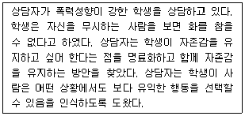
- 현실치료 이론
- 정신분석 이론
- 사회유대 이론
- 행동주의 이론
- 생태학적 이론
(정답률: 알수없음)
3. 범죄나 비행에 관한 사회구조이론에 속하는 것은?
- 긴장이론
- 중화이론
- 사회유대이론
- 사회학습이론
- 차별접촉이론
(정답률: 알수없음)
4. 지위 비행을 모두 고른 것은?
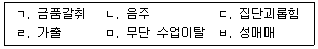
- ㄱ, ㄴ
- ㄱ, ㄷ, ㄹ
- ㄴ, ㄹ, ㅁ
- ㄹ, ㅁ, ㅂ
- ㄴ, ㄹ, ㅁ, ㅂ
(정답률: 알수없음)
5. 생물학적 범죄원인론의 관점으로 옳은 것은?
- 공리주의에 근거한다.
- 결정론적 시각을 지닌다.
- 개인차는 가정하지 않는다.
- 인간은 자유의지를 가진 존재이다.
- 범죄자보다는 범죄에 초점을 둔다.
(정답률: 알수없음)
6. 다음에서 설명하는 상담기법은?
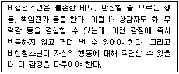
- 공감(empathy)
- 전이(transference)
- 진솔(genuineness)
- 간직하기(containing)
- 역설적 의도(paradoxical intention)
(정답률: 알수없음)
7. 정신병질(psychopathy)의 직ㆍ간접적인 원인 또는 전조증상을 모두 고른 것은?
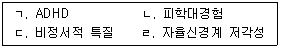
- ㄱ, ㄹ
- ㄱ, ㄴ, ㄷ
- ㄱ, ㄷ, ㄹ
- ㄴ, ㄷ, ㄹ
- ㄱ, ㄴ, ㄷ, ㄹ
(정답률: 알수없음)
8. 다음에서 상담자의 비행상담 접근법은?
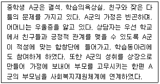
- 생태학적 접근
- 현상학적 접근
- 개인지향적 접근
- 정신분석적 접근
- 합리적 정서 치료적 접근
(정답률: 알수없음)
9. 청소년 비행의 원인 중 정적(static) 위험요인이 아닌 것은?
- 지능
- 비행력
- 알코올중독
- 초범 연령
- 임시퇴원 취소
(정답률: 알수없음)
10. 다음에서 설명하는 이론은?
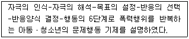
- 지능 이론
- 정신분석 이론
- 사회학습 이론
- 사회정보처리 이론
- 도덕성 발달단계 이론
(정답률: 알수없음)
11. MMPI 하위척도 상 피해망상 등에 기인하여 폭력적인 비행을 일으킬 가능성이 많다고 판단되는 성격 프로파일은?
- 1 - 3 척도 상승
- 2 - 7 척도 상승
- 4 - 9 척도 상승
- 1 - 2 - 3 척도 상승
- 4 - 6 - 8 척도 상승
(정답률: 알수없음)
12. 품행장애의 특징으로 옳지 않은 것은?
- 품행장애의 아형은 발병 연령에 입각한 것이다.
- 여성보다는 남성에게서 더 높은 유병률을 보인다.
- 자신의 공격적 반응이 합리적이고 정당하다고 생각한다.
- 타인의 권리를 침해하고 규칙을 위반하는 행위를 반복한다.
- 행동장애에도 불구하고 학업적ㆍ사회적 기능상에는 별다른 손상이 발생하지 않는다.
(정답률: 알수없음)
13. 다음 학교폭력 예방교육 내용 중 싸익스와 마짜(G. Sykes & D. Matza)의 중화이론과 관련된 것을 모두 고른 것은?
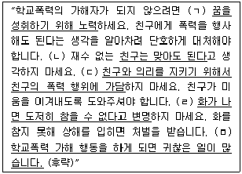
- ㄱ, ㄴ
- ㄴ, ㄷ
- ㄹ, ㅁ
- ㄴ, ㄷ, ㄹ
- ㄷ, ㄹ, ㅁ
(정답률: 알수없음)
14. 경찰청의 훈방 대상자가 될 수 없는 비행청소년을 모두 고른 것은?
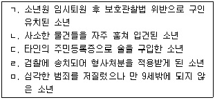
- ㄱ, ㄴ
- ㄱ, ㄹ
- ㄴ, ㅁ
- ㄴ, ㄷ, ㄹ
- ㄷ, ㄹ, ㅁ
(정답률: 알수없음)
15. 상담실무자가 친부 성폭력 피해자인 만 15세 청소년을 발견하였을 시 취할 수 있는 조치로 옳지 않은 것은?
- 즉시 아동보호전문기관 또는 경찰에 신고한다.
- 피해자가 경찰 조사를 받을 때 신뢰관계자로 동석해준다.
- 피해자가 법률조력인의 도움을 받을 수 있도록 조치한다.
- 경찰조사 전 상담실무자가 직접 피해사실을 조사하고 녹화한다.
- 상담실무자는 아동보호전문기관의 장이 검사에게 친권상실을 청구하도록 요청하였는지 확인한다.
(정답률: 알수없음)
16. 상담자가 학교폭력학생 대상 프로그램명을 '폭력학생 선도 집단상담'에서 '장차 크게 될 사람들을 위한 집단상담'으로 변경하려 한다. 프로그램명 변경의 근거가 되는 이론을 모두 고른 것은?
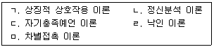
- ㄱ, ㄴ
- ㄷ, ㄹ
- ㄱ, ㄷ, ㄹ
- ㄷ, ㄹ, ㅁ
- ㄱ, ㄷ, ㄹ, ㅁ
(정답률: 알수없음)
17. 청소년이 사용하는 방어기제와 그 예가 옳지 않은 것은?
- 전치(대치) - 부모에게 화난 학생이 친구에게 폭력을 행사한다.
- 동일시 - 폭력 피해학생이 가해학생의 폭력행위를 따라서 한다.
- 반동형성 - 선생님에게 화난 학생이 선생님의 말에 오히려 순종한다.
- 투사 - 열등감을 가진 학생이 친구를 때린 후 “친구가 나를 무시했다.”고 한다.
- 부인 - 폭력 학생이 “상대가 시비를 걸었기 때문에 나는 책임이 없다.”고 한다.
(정답률: 알수없음)
18. 학교폭력예방 및 대책에 관한 법률의 내용으로 옳은 것을 모두 고른 것은?
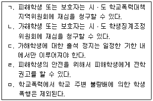
- ㄱ, ㄴ
- ㄱ, ㄷ
- ㄴ, ㄷ
- ㄷ, ㄹ
- ㄹ, ㅁ
(정답률: 알수없음)
19. 범죄소년이 임시퇴원 기간 중 재범하여 처분이 변경될 경우 해당하는 재비행 예측의 유목은?
- 부정
- 진부정
- 진긍정
- 오류부정
- 오류긍정
(정답률: 알수없음)
20. 선생님을 구타한 청소년에 대한 상담자의 반응이 근거하는 개념은?
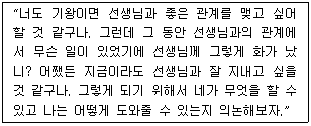
- 내사
- 방어기제
- 역설적 의도
- 실존적 불안
- 실현경향성 신뢰
(정답률: 알수없음)
21. 사회유대이론을 적용한 비행상담 과제로 옳지 않은 것은?
- 어린 시절의 좌절 경험을 탐색한다.
- 학교 동아리 활동을 통해 소속감을 증진시킨다.
- 적성에 맞는 진로를 찾아 전념할 수 있도록 한다.
- 학습스트레스를 극복하도록 하여 학습에 몰입하게 한다.
- 존경하는 교사와의 관계를 돈독히 하도록 해준다.
(정답률: 알수없음)
22. 다음 사례에서 선고할 수 있는 처분으로 옳지 않은 것은?
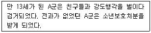
- 5호 처분
- 8호 처분
- 1호 처분과 3호 처분의 병과
- 4호 처분과 6호 처분의 병과
- 1호 처분, 2호 처분과 4호 처분의 병과
(정답률: 알수없음)
23. 비행청소년 대상 집단상담을 기획할 때 반두라(A. Bandura)의 관찰학습 원리를 바르게 적용한 것은?
- 인지적 작업을 중심으로 구성한다.
- 비행청소년과 함께 훈련된 또래상담자를 참여시킨다.
- 세부적인 사항까지 엄격한 규칙을 정하고 부과한다.
- 집단 내에서 서열이 생겨 고착되지 않도록 벌칙을 부과한다.
- 집단원간의 공감대 형성을 위해 비행청소년만으로 구성된 동질집단으로 구성한다.
(정답률: 알수없음)
24. 다음에서 김교사가 사용한 문제행동 교정 기법은?
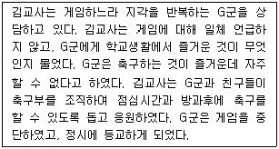
- 소거법(extinction)
- 행동조성(behavior shaping)
- 행동계약(behavioral contract)
- 부적 강화(negative reinforcement)
- 상반행동의 강화(reinforcement of incompatible behavior)
(정답률: 알수없음)
25. 경계선 성격장애 특성을 평가하는 주요 임상 하위척도가 포함된 표준화 심리검사는?
- CPI
- PAI
- 16PF
- MBTI
- MMPI
(정답률: 알수없음)
26. 이교사가 A군의 행동을 이해하는 데 사용한 개념은?
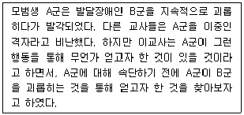
- 격려
- 수용
- 자기통제력
- 증상과 역동
- 가공적 목적론
(정답률: 알수없음)
27. 폭력행위와 관련된 뇌기능의 특징으로 옳지 않은 것은?
- EEG상 서파
- 세로토닌 감소
- 전두엽의 각성
- 변연계 기능 이상
- 기준 각성의 회복 지연
(정답률: 알수없음)
28. 다음에서 갈등관계 해결을 위한 상담자 개입이 기초하고 있는 것은?
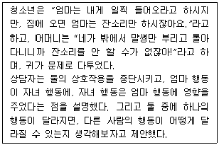
- 원인과 결과는 상호 독립적이다.
- 원인과 결과는 순환적 관계에 있다.
- 원인과 결과는 직선적 관계에 있다.
- 원인과 결과는 시작과 끝이 분명하다.
- 하나의 원인은 결과의 부분만을 설명한다.
(정답률: 알수없음)
29. 성범죄 가해청소년을 대상으로 하는 80시간 수강명령 프로그램의 상담 목표로 옳지 않은 것은?
- 재범 방지
- 성인지 왜곡 교정
- 사회적 기술 증진
- 반사회적 성격구조 변화
- 피해자에 대한 공감 촉진
(정답률: 알수없음)
30. 다음에서 예시한, 켈리(G. Kelley)가 고안한 행동변화 방법은?
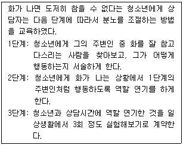
- 행동계약(behavior contract)
- 행동조성(behavior shaping)
- 관찰학습(observational learning)
- 고정역할훈련(fixed role training)
- 체계적 둔감화(systematic desensitization)
(정답률: 알수없음)
2과목: 성상담
31. 다음은 어떤 유형의 성희롱인가?
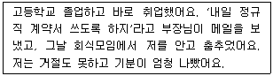
- 조건적 성희롱
- 환경적 성희롱
- 음란적 성희롱
- 시각적 성희롱
- 언어적 성희롱
(정답률: 알수없음)
32. 성폭력 청소년 가해자를 상담하는 상담자의 업무 및 자세로 옳지 않은 것은?
- 중립적인 자세를 유지한다.
- 가해자 평가 및 사정을 한다.
- 가해자의 인권을 보호한다.
- 가해자의 변화를 반영하여 해결방안을 탐색한다.
- 가해자가 원하는 것을 확인하고 처리할 것을 약속한다.
(정답률: 알수없음)
33. 다음 사례를 상담하는 과정을 순서대로 바르게 나열한 것은?
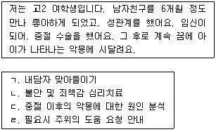
- ㄱ - ㄷ - ㄴ - ㄹ
- ㄱ - ㄹ - ㄴ - ㄷ
- ㄴ - ㄷ - ㄱ - ㄹ
- ㄷ - ㄴ - ㄱ - ㄹ
- ㄷ - ㄴ - ㄹ - ㄱ
(정답률: 알수없음)
34. 성에 관한 용어의 설명으로 옳지 않은 것은?
- 젠더: 후천적으로 학습된 사회문화적 성
- 섹스: 생물학적인 기제 또는 육체적 성행위
- 페티시즘: 생명이 없는 물건을 사용하여 성적 쾌락을 추구
- 섹슈얼리티: 남녀의 성행동뿐만 아니라 감정ㆍ태도ㆍ규범ㆍ가치관ㆍ행동방식
- 소아기호증: 18세 미만 아동ㆍ청소년을 상대로 성적인 접촉을 하고 성만족을 추구하는 증상
(정답률: 알수없음)
35. 다음 ( )에 공통으로 들어갈 내용은?
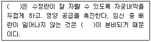
- 옥시토신
- 에피네프린
- 에스트로겐
- 프로게스테론
- 테스토스테론
(정답률: 알수없음)
36. 청소년기 신체적 발달에 관한 설명으로 옳지 않은 것은?
- 남녀의 성 발달 차이는 성관련 내분비계 호르몬 때문이다.
- 체모, 발한, 여드름 등은 남녀 모두에게 나타난다.
- 월경 양이 많은 여성이 그렇지 않은 여성보다 건강하다.
- 사춘기의 신체적 발달은 일반적으로 여성이 남성보다 빠르다.
- 신체적 이미지에 대한 불만정도는 사회문화적 기준에 따라 다르다.
(정답률: 알수없음)
37. 성에 관한 융(C. Jung)의 설명으로 옳은 것은?
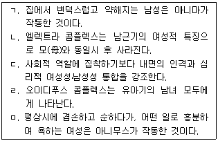
- ㄱ, ㄴ, ㄷ
- ㄱ, ㄷ, ㅁ
- ㄴ, ㄷ, ㄹ
- ㄴ, ㄹ, ㅁ
- ㄷ, ㄹ, ㅁ
(정답률: 알수없음)
38. 스턴버그(R. Sternberg)의 사랑의 삼각형 이론에 관한 설명으로 옳지 않은 것은?
- 좋아함은 친밀감만 있는 경우이다.
- 얼빠진 사랑은 열정, 헌신의 결합이다.
- 낭만적 사랑은 친밀감, 열정의 결합이다.
- 소유론적 사랑은 열정만 있는 경우이다.
- 동반자적 사랑은 친밀감, 헌신의 결합이다.
(정답률: 알수없음)
39. 청소년의 성적 자기결정권을 행사하는 태도에 관한 설명으로 옳지 않은 것은?
- 상대방의 성적 지향성에 의존한다.
- 상대방의 입장을 진지하게 생각한다.
- 어떤 성행동도 자신의 의지에 따라 결정한다.
- 상대방이 원하지 않는 행위를 강요하지 않는다.
- 자신에게 왜 성적 접촉을 하는지를 물어본다.
(정답률: 알수없음)
40. 다음에서 설명하는 학자는?
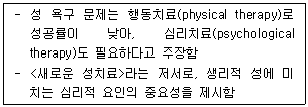
- 마스터스와 존슨(W. Masters & V. Johnson)
- 캐플란(H. Kaplan)
- 프로이트(S. Freud)
- 하이트(S. Hite)
- 킨제이(A. Kinsey)
(정답률: 알수없음)
41. 성과 성문화의 관점에 관한 설명으로 옳지 않은 것은?
- 동성애자 상담은 역사적 상담 접근을 해야 한다.
- 성매매를 성욕구 해결방법으로 보는 입장이 있다.
- 성 금기와 위반기제는 시대와 문화에 따라 다르다.
- 양성평등교육은 남녀차이를 알되, 성차별하지 않도록 하는 교육이다.
- 성역할 고정관념은 성의 안정된 신념이나 이미지로서 성행동 판단시에 작동한다.
(정답률: 알수없음)
42. 성역할 발달 이론 중 사회학적 관점을 모두 고른 것은?
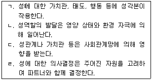
- ㄱ, ㄷ
- ㄴ, ㄷ
- ㄷ, ㄹ
- ㄱ, ㄷ, ㄹ
- ㄴ, ㄷ, ㄹ
(정답률: 알수없음)
43. 성정체감에 관한 용어의 설명으로 옳지 않은 것은?
- 커밍아웃: 자신이 동성애자임을 말하는 것
- 성적 지향성: 성적 관심이 생물학적 동성에게 향하는 것
- 레즈비언: 여성과 성적으로 친밀한 관계를 가지는 여성
- 양성애자: 남녀 모두에게 성적 매혹을 경험하고 행동하는 자
- 성전환자: 자신의 신체가 반대 성의 특성을 가지고 태어났다고 생각하는 자
(정답률: 알수없음)
44. 다음 사례의 남자 청소년에 대한 상담자의 초기반응으로 바람직한 것은?
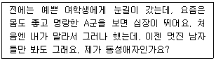
- 애정대상이 동성친구군요.
- 혹시 여자 친구를 만날 기회가 없었나요?
- 이성교제 기회를 자주 가지면 좋겠어요.
- 동성애자로 살아가야 하는 한국 현실이 좀 어렵죠.
- 우정 이상의 감정을 느껴 당황하고 걱정하고 있군요.
(정답률: 알수없음)
45. 성의 발달에 관한 설명으로 옳은 것을 모두 고른 것은?
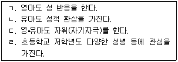
- ㄱ, ㄴ
- ㄷ, ㄹ
- ㄱ, ㄴ, ㄷ
- ㄴ, ㄷ, ㄹ
- ㄱ, ㄴ, ㄷ, ㄹ
(정답률: 알수없음)
46. 청소년의 음란물 접촉 경험에 관한 설명으로 옳은 것은?
- 접촉빈도에 성차가 없다.
- 접촉빈도가 높을수록 최초 성행동 연령이 낮아진다.
- 남자청소년은 접촉경험 후 죄책감에 대한 보고가 없다.
- 여자청소년은 동영상보다 만화를 더 많이 접촉한다.
- 접촉경험 후 파트너와의 성행동 증가로 자위행위가 감소한다.
(정답률: 알수없음)
47. 사춘기 성적 발달에 관한 설명으로 옳지 않은 것은?
- 남자: 테스토스테론 증가로 뼈와 근육이 급속 성장한다.
- 남자: 정자 생산이 시작된 후에도 고환이 계속 성숙한다.
- 여자: 남자보다 사춘기가 일찍 시작된다.
- 여자: 에스트로겐 증가로 유방조직이 발달한다.
- 여자: 배란이 시작되면 에스트로겐 증가로 성적 관심이 높아진다.
(정답률: 알수없음)
48. 성기관의 특징과 역할에 관한 설명으로 옳은 것은?
- 전립선: 분비샘으로 정액의 일부를 분비한다.
- 음낭: 정자를 생산하고 성호르몬을 분비한다.
- 질: 월경혈 배출통로이며 감각세포가 없다.
- 부고환: 고환에 이상이 생기면 그 기능을 대신한다.
- 자궁: 질에 연결되어 있고, 수정 전 정자는 진입할 수 없다.
(정답률: 알수없음)
49. 청소년 피임교육 내용으로 옳은 것을 모두 고른 것은?
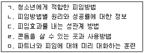
- ㄱ, ㄴ, ㄹ
- ㄷ, ㄹ, ㅁ
- ㄱ, ㄴ, ㄷ, ㅁ
- ㄱ, ㄴ, ㄹ, ㅁ
- ㄱ, ㄴ, ㄷ, ㄹ, ㅁ
(정답률: 알수없음)
50. 먹는 피임약에 관한 설명으로 옳은 것은?
- 다른 약과 함께 복용할 수 없다.
- 의사처방 없이 약국에서 구입할 수 없다.
- 복용량을 늘리면 사후피임의 효과가 있다.
- 월경전증후군과 생리불순의 경감 효과가 있다.
- 여성호르몬을 조절하여 난자 없는 배란을 유도한다.
(정답률: 알수없음)
51. 자위행위에 관한 설명으로 옳은 것은?
- 청소년 자위행위 경험 빈도에는 성차가 없다.
- 사춘기 호르몬 영향으로 시작되어 성인기에 사라진다.
- 파트너와의 성교에서 즐거움을 느끼는 데 방해가 된다.
- 성적 파트너와 성행동을 하면 자위행위를 하지 않는다.
- 자위로 경험하는 오르가슴은 파트너와의 성교에서 경험하는 것과 생리학적으로 동일하다.
(정답률: 알수없음)
52. 모자보건법상 인공임신중절수술을 할 수 있는 경우를 모두 고른 것은?
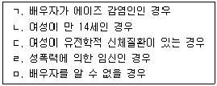
- ㄱ, ㄷ
- ㄴ, ㄹ
- ㄱ, ㄷ, ㄹ
- ㄱ, ㄴ, ㄷ, ㅁ
- ㄴ, ㄷ, ㄹ, ㅁ
(정답률: 알수없음)
53. 남녀의 성욕구와 성태도에 관한 설명으로 옳지 않은 것은?
- 청소년기 성욕구의 경험 내용에는 성차가 있다.
- 여자는 자기 성적 반응에 대한 자각수준이 남자에 비해 낮다.
- 여자는 사춘기가 남자보다 이르게 시작되지만 성욕구의 증가는 남자보다 늦게 시작된다.
- 남자 청소년의 성욕구 증가는 호르몬의 작용인 데 비해 여자 청소년의 성욕구 증가는 심리적인 영향이다.
- 여자는 자기 생식기를 쉽게 보거나 만질 수 없기 때문에 자신을 성적 존재로 인지하는 것이 남자에 비해 늦다.
(정답률: 알수없음)
54. 이상 성행동에 관한 설명으로 옳은 것은?
- SM(sadomasochism: 가학-피학변태성욕): 성매매에서 흔하며 교육수준이 높을수록 발병률이 낮다.
- 물품음란증: 특정 물건으로 성적 흥분을 느끼는 것으로, 여자 속옷을 가지고 자위를 한다면 DSM상 이 진단에 해당한다.
- 관음증: 사람의 나체나 성행위를 보고 싶은 강한 욕구가 있으며, 욕구 충족을 위해 가택침입등 불법행위를 해서 발각되는 경우가 많다.
- 노출증: 자기 신체부위를 드러냄으로써 성적 흥분을 느끼며, 남성이 진단받는 비율이 여성보다 20배가량 높다.
- 복장도착증: 자기와 반대성의 옷을 입음으로써 성적 흥분을 느끼는 것으로 사춘기에 시작되며, 가장 흔한 성도착증이다.
(정답률: 알수없음)
55. 청소년 성교육에 관한 설명으로 옳지 않은 것은?
- 10대 청소년을 성적 주체로 존중할 필요가 있다.
- 가정에서의 성교육 여부는 자녀의 첫 성교 연령과 관계가 없다.
- 학교 성교육은 10대 임신ㆍ낙태를 감소시키는 효과가 있다.
- 부모가 최초의 성교육자가 될 수 있다면 좋지만, 필요한 정보가 부족할 수 있다.
- 부모들은 자녀의 성적 호기심을 자극할 수 있다는 이유로 성교육에 반대하기도 한다.
(정답률: 알수없음)
56. 청소년 동성애 고민 상담 및 개입에 관한 설명으로 옳은 것은?
- 동성애자는 자살위험이 높으므로 주변인을 상담에 참여시킨다.
- 성적 지향은 가변적이므로 성적 지향에 대한 판단을 유예시킨다.
- 동성애자로 확인한 후라면, 커밍아웃에 대한 의사결정 과정을 돕는다.
- 스스로 동성애자로 확인한 경우, 같은 성적 지향의 상담자에게 의뢰한다.
- 만 20세 대학생이 자기 성적지향에 혼란을 느낀다면 킨제이척도로 동성애자인지를 확인할 수 있다.
(정답률: 알수없음)
57. 전문가로서 성상담자의 윤리와 관련된 점검사항으로 옳지 않은 것은?
- 책임있는 상담에 필요한 성지식을 갖추어야 한다.
- 자위행위, 오르가슴 등 정상적인 성경험이 있어야 한다.
- 혼전성교, 청소년 임신 등에 대한 자기태도를 인식하여야 한다.
- 자기 역량의 한계를 인식하고, 필요한 지도감독을 받아야 한다.
- 사회문화적 영향을 고려하여 내담자의 성행동, 성태도 등을 평가할 수 있어야 한다.
(정답률: 알수없음)
58. 청소년 성매매 양상에 관한 설명으로 옳은 것을 모두 고른 것은?
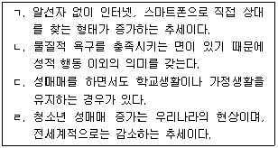
- ㄱ, ㄴ
- ㄱ, ㄹ
- ㄱ, ㄴ, ㄷ
- ㄴ, ㄷ, ㄹ
- ㄱ, ㄴ, ㄷ, ㄹ
(정답률: 알수없음)
59. 성병에 관한 설명으로 옳은 것은?
- 임질: 여성은 자각 증상이 없다.
- 단순포진: 감염되면 일생동안 지속된다.
- 클라미디아: 잦은 질 세척이 원인이다.
- 에이즈: 진단이 어렵고 비용이 많이 든다.
- 매독: 성기주변에만 증상이 나타나며, 여성의 경우 태아를 감염시킬 수 있다.
(정답률: 알수없음)
60. 다음에서 설명하는 성 염색체 이상 증후군은?
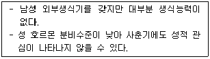
- 터너 증후군
- 자웅동체 증후군
- 테스토스테론 불감성증후군
- 안드로겐 불감성증후군
- 클라인펠터 증후군
(정답률: 알수없음)
3과목: 약물상담
61. 금단증상에 관한 설명으로 옳지 않은 것은?
- 재발의 고위험요인으로 작용한다.
- 약물사용과 연관된 자극에 대한 반응이다.
- 약물중단 후 손떨림, 오한, 불안 등의 증상으로 나타난다.
- 습관적으로 사용하던 약물을 중단할 때 나타나는 증상이다.
- 치료약물로 인한 증상은 물질관련사용장애 진단기준에 해당되지 않는다.
(정답률: 알수없음)
62. 중추신경억제제로 작용하는 약물로 짝지어진 것은?
- 메테드린, 아티반
- 필로폰, 덱스드린
- 본드, 필로폰
- 모르핀, 덱스드린
- 아편, 신나
(정답률: 알수없음)
63. 약물로 인해 나타나는 신체ㆍ정신적 증상에 관한 설명으로 옳지 않은 것은?
- 벤조디아제핀류는 중독성이 강해 초기에만 간질 발작이 일어난다.
- 러미라에 대한 중독이 진행될수록 환각증상이 나타날 수 있다.
- 바비탈에 중독된 상태에서는 동작이 둔해지고 기억력 장애가 나타난다.
- 관상동맥 과거력이 있는 경우, 마리화나 남용으로 동반되는 빈맥이 협심증을 유발할 수 있다.
- 흡입제를 장기간 사용하면 의식장애, 지각이상 등이 나타난다.
(정답률: 알수없음)
64. 사회적 무능력 모델에 근거한 청소년 약물남용에 관한 설명으로 옳은 것을 모두 고른 것은?
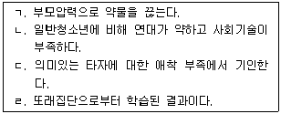
- ㄱ, ㄴ
- ㄱ, ㄹ
- ㄴ, ㄷ
- ㄴ, ㄹ
- ㄱ, ㄴ, ㄷ
(정답률: 알수없음)
65. 약물남용에 대한 선별 목적으로 옳은 것은?
- 진단기준 부합 여부 결정
- 약물남용에 대한 상담서비스 치료계획 수립
- 약물남용과 관련된 문제 특징과 범위 결정
- 변화된 정도를 근거로 사후서비스 제공 여부 결정
- 잠재적 약물남용자 발견과 추가 사정 필요 여부 파악
(정답률: 알수없음)
66. 알코올중독자 자녀 중 문제성 음주 청소년을 대상으로 집단프로그램을 시행하려고 할 때, 대상자 선별에 적합한 도구로 짝지어진 것은?
- CAST-K와 KAAPI
- POSIT과 KAAPI
- KAAPI와 TWEAK
- CAST-K와 SOCRATES-K
- POSIT과 TWEAK
(정답률: 알수없음)
67. 다음은 맥도날드(D. MacDonald) 등이 제시한 청소년 약물사용단계 중 어느 단계인가?
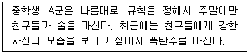
- 인식과 호기심단계
- 실험단계
- 사회적 사용단계
- 몰두하는 단계
- 의존의 단계
(정답률: 알수없음)
68. 중독가족의 공동의존자에 관한 설명으로 옳지 않은 것은?
- 낮은 자존감, 수치심 등을 보인다.
- 가족보다는 자신의 욕구를 충족시키는 데 초점을 둔다.
- 타인의 행동과 감정에 대해 과도한 책임감을 느낀다.
- 중독자와 연합하여 중독자의 치료를 방해한다.
- 완벽주의 성향을 보인다.
(정답률: 알수없음)
69. 약물남용과 정신장애 간 이중장애에 관한 설명으로 옳지 않은 것은?
- 습관성 약물사용은 정신장애의 원인이 될 수 있다.
- 이중장애 여부는 치료 순응도에 영향을 주지 않는다.
- 불안, 우울 등을 감추기 위해 습관성 약물사용을 할 수 있다.
- 두 질환의 상호작용으로 인해 일상생활 적응에 어려움을 경험한다.
- 주요우울장애 환자의 경우, 약물남용이 공존하면 자살가능성이 높아진다.
(정답률: 알수없음)
70. 고르스키(T. Gorski)가 제안한 재발로부터 회복하는 과정에 관한 설명으로 옳지 않은 것은?
- 회복은 몇 개의 단계를 거치는 연속적인 발달과정이다.
- 재발 예방은 지속적으로 이루어져야 한다.
- 전환기에 단주를 못하는 이유는 '술을 조절할 수 있다'는 신념 때문이다.
- 초기 회복기에는 금단증상 및 질환을 치료하여 안정화시키는 것이 목적이다.
- 회복단계는 전환기-치료초기-초기 회복기-중기 회복기-후기 회복기-유지기 순이다.
(정답률: 알수없음)
71. DSM-IV에서 DSM-5로 개정하면서 물질관련장애와 관련하여 변경된 내용을 모두 고른 것은?
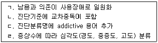
- ㄱ, ㄴ
- ㄱ, ㄹ
- ㄴ, ㄷ
- ㄱ, ㄷ, ㄹ
- ㄴ, ㄷ, ㄹ
(정답률: 알수없음)
72. 여성의 약물중독 특성으로 옳은 것은?
- 남성에 비해 장기간에 걸쳐 중독된다.
- 사회적 낙인 정도가 남성과 큰 차이가 없다.
- 폭력피해경험과 약물중독의 상관관계가 높은 편이다.
- 여성 유병률이 빠르게 증가하여 남성과 차이가 없다.
- 동일한 양을 섭취했을 때, 남녀 간 혈중농도는 차이가 없다.
(정답률: 알수없음)
73. 어떤 약물에 노출되어 내성이 생긴 후에 그 약물과 화학구조나 약리적 작용이 비슷한 다른 약물에 대해서도 내성이 생기는 현상은?
- 과정중독
- 금주위반효과
- 대사적 내성
- 약물동태적 내성
- 교차 내성
(정답률: 알수없음)
74. 알코올 및 약물중독 문제를 사정하는 도구에 관한 설명으로 옳은 것은?
- PEI: 청소년을 대상으로 약물에 관한 전반적인 체험 평가
- ASI: 4가지 영역에 걸쳐 약물중독의 심각도 평가
- CDP: 음주력과 공동의존을 함께 평가
- HQ: 알코올로 인한 문제를 중심으로 알코올중독 유형 분류
- SADQ: 알코올로 인한 문제 평가
(정답률: 알수없음)
75. 사례관리 개입단계 중 조정활동을 모두 고른 것은?
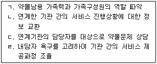
- ㄱ, ㄴ
- ㄱ, ㄷ
- ㄴ, ㄹ
- ㄴ, ㄷ, ㄹ
- ㄱ, ㄴ, ㄷ, ㄹ
(정답률: 알수없음)
76. 청소년 보호법령상 환각물질 중독치료 등에 관해 여성가족부 장관이 할 수 있는 내용으로 옳지 않은 것은?
- 판별 검사 비용의 전부 또는 일부를 지원할 수 있다.
- 청소년 환각물질 중독 전문 치료기관을 지정ㆍ운영할 수 있다.
- 환각물질 흡입 청소년 본인이 신청할 경우 청소년 전문 치료기관에서 판별 검사를 받도록 지원할 수 있다.
- 환각물질 중독자로 판명된 청소년에 대한 치료 및 재활 기간은 6개월 이내로 하되, 6개월의 범위에서 연장할 수 있다.
- 검사의 조건부기소유예처분 등이 있는 경우 청소년 전문 치료기관에서 판별 검사를 받도록 지원할 수 있다.
(정답률: 알수없음)
77. 약물상담 초기에 다루어야 할 내용이 아닌 것은?
- 상담계획 수립
- 약물남용수준 평가
- 건강한 자아개념 형성
- 약물 해독을 위한 치료기관 연계
- 약물사용 절제와 상담을 위한 동기 촉진
(정답률: 알수없음)
78. 청소년 약물상담에서 치료관계를 방해하는 상담자의 태도를 모두 고른 것은?
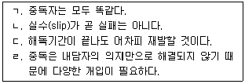
- ㄱ, ㄴ
- ㄱ, ㄷ
- ㄷ, ㄹ
- ㄴ, ㄷ, ㄹ
- ㄱ, ㄴ, ㄷ, ㄹ
(정답률: 알수없음)
79. 투약 방식의 특성으로 인해 인체 면역결핍바이러스(HIV)의 감염위험이 높은 약물로 짝지어진 것은?
- 부탄가스 - 본드
- 코카인 - 필로폰
- 헤로인 - 대마초
- 아편 - 알코올
- 아세톤 - LSD
(정답률: 알수없음)
80. 청소년 약물상담에 대해 학교에서 실행 가능한 1차 예방에 해당하지 않는 것은?
- 사례개입 프로그램
- 약물예방교육
- 약물예방캠페인
- 약물남용인식조사
- 학부모 감시단 운영
(정답률: 알수없음)
81. 코카인 남용에 관한 설명으로 옳은 것을 모두 고른 것은?
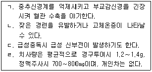
- ㄱ, ㄴ
- ㄱ, ㄹ
- ㄴ, ㄷ
- ㄴ, ㄷ, ㄹ
- ㄱ, ㄴ, ㄷ, ㄹ
(정답률: 알수없음)
82. 담배 사용 장애에 관한 설명으로 옳지 않은 것은?
- 장기간 니코틴 사용으로 발생하는 부적응 문제이다.
- 금단증상은 불안, 집중력곤란, 식욕감소 등이다.
- 내성, 금단증상, 강박적 사용 등이 포함된다.
- 흡연 폐해를 알면서도 반복적으로 사용한다.
- 흡연유발인자가 많아 쉽게 재발한다.
(정답률: 알수없음)
83. 암페타민제제에 관한 설명으로 옳지 않은 것은?
- 사용 시 혈압과 심장 박동수가 떨어져 호흡이 느려진다.
- 약물사용 후 일시적으로 사고력과 기억력이 증진된다.
- 중독이 되면 불안, 공황, 착란 등이 나타난다.
- 약물이 혈관을 수축시켜 고혈압이 악화된다.
- 정신적 중독성과 독성이 강해 프랑스에서는 1967년 법령에 의해 마약으로 분류되었다.
(정답률: 알수없음)
84. 밀러와 롤닉(W. Miller & S. Rollnick)의 동기면담 원리에 해당하지 않는 것은?
- 자기효능감 지지하기
- 불일치감 만들기
- 저항과 함께 구르기
- 공감표현하기
- 직면하기
(정답률: 알수없음)
85. A. A.(Alcoholics Anonymous)에 관한 설명으로 옳은 것을 모두 고른 것은?
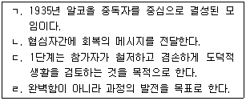
- ㄱ, ㄴ
- ㄱ, ㄹ
- ㄴ, ㄷ
- ㄱ, ㄴ, ㄹ
- ㄴ, ㄷ, ㄹ
(정답률: 알수없음)
86. 청소년 약물예방에 관한 설명으로 옳지 않은 것은?
- 형사처벌이나 치료재활 같은 사후개입보다는 예방이 효과적이다.
- 예방이란 약물남용의 발생ㆍ확산을 줄이는 활동을 의미한다.
- 1차 예방은 약물에 대한 법적 제재를 포함한다.
- 2차 예방은 약물사용 시작 전에 보호요소의 증가를 목표로 한다.
- 3차 예방은 치료ㆍ재활프로그램을 포함한다.
(정답률: 알수없음)
87. 다음 상담사례에서 사용한 가족상담 이론에 관한 설명으로 옳지 않은 것은?
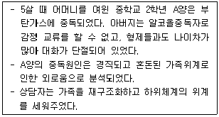
- 대표적인 학자는 미누친(S. Minuchin)이다.
- 인간행동은 가족 간의 구조적인 특성을 통해 나타난다.
- 하위체계와 경계선 등을 통해 가족을 평가한다.
- 잘못된 가족 구조의 원인을 구두점 원리로 설명한다.
- 가족상담자는 긴장고조, 증상활용, 과제부과 등의 방법을 활용한다.
(정답률: 알수없음)
88. 다음은 프로차스카와 디클레멘테(J. Prochaska & C. DiClemente)가 개발한 초이론적 모델(Transtheoretical Model, TTM)의 변화단계 중 어느 단계에 해당하는가?
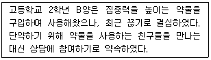
- 인식전단계
- 인식단계
- 준비단계
- 행동실천단계
- 유지단계
(정답률: 알수없음)
89. 약물남용 상담자의 역할로 옳은 것을 모두 고른 것은?
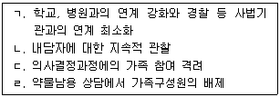
- ㄱ, ㄴ
- ㄱ, ㄹ
- ㄴ, ㄷ
- ㄴ, ㄷ, ㄹ
- ㄱ, ㄴ, ㄷ, ㄹ
(정답률: 알수없음)
90. 약물남용 청소년에 대한 현실치료적 접근방법으로 옳은 것은?
- 변명 받아들이지 않기
- 가치판단 배제하기
- 과거 비행에 초점 맞추기
- 정신질환 환자로 받아들이기
- 엄정한 상벌주기
(정답률: 알수없음)
4과목: 위기상담
91. 다음에서 설명하는 브래머(L. Brammer)의 위기유형은?
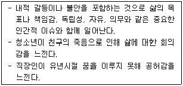
- 실존적 위기
- 상황적 위기
- 발달적 위기
- 환경적 위기
- 사회문화적 위기
(정답률: 알수없음)
92. 테어(L. Terr)의 아동기 외상유형에 관한 설명으로 옳지 않은 것은?
- 교통사고나 자연재해 등은 유형 I에 속한다.
- 유형 I 사건은 기억에 각인되며, 반추, 인지적 재검토, 추론 등의 전조증상을 보인다.
- 유형 I 사건의 경험은 대개 사건에 대해 자세하고 선명한 기억을 가질 가능성이 높다.
- 유형 II는 오랫동안 지속되는 반복적인 외상을 말한다.
- 유형 II를 경험한 아동은 외상을 극복하려고 사건을 재생하면서 원인이나 예방법을 찾는다.
(정답률: 알수없음)
93. 다음에서 설명하는 위기개입 이론은?
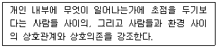
- 체계이론
- 대인이론
- 적응이론
- 혼돈이론
- 정신분석이론
(정답률: 알수없음)
94. 위기의 특성에 관한 설명으로 옳은 것을 모두 고른 것은?
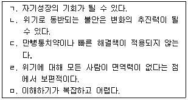
- ㄱ, ㄷ, ㅁ
- ㄴ, ㄹ, ㅁ
- ㄱ, ㄴ, ㄷ, ㄹ
- ㄴ, ㄷ, ㄹ, ㅁ
- ㄱ, ㄴ, ㄷ, ㄹ, ㅁ
(정답률: 알수없음)
95. 위기사례 개입원칙이 아닌 것은?
- 즉각적인 욕구에 초점 맞추기
- 신속한 초기 분류와 위기 사정하기
- 개별화된 문제에 대해 구체적으로 처방하기
- 전인적인 면에서 심층적 원인에 초점 맞추기
- 위기 이전 수준으로 회복되기까지 행동평가 지속하기
(정답률: 알수없음)
96. 위기사정에 관한 설명으로 옳지 않은 것은?
- 위기사정은 현재 지향적이다.
- 위기사정은 협동적인 과정이다.
- 개인의 과거나 정신역동에 초점을 두지 않는다.
- 위기사정은 라포를 형성한 이후에 천천히 한다.
- 내담자가 경험하는 문제 상황의 대인관계 차원을 중심으로 이루어진다.
(정답률: 알수없음)
97. PTSD 치료에서 외상사건에 대해 기억해내는 것에 관한 설명으로 옳지 않은 것은?
- 두려움을 감소시키는 효과가 있다.
- 내담자의 외상기억을 정확히 복원하는 것이 중요하다.
- 외상기억과 과거 기억을 통합시키는 것은 치료에 도움이 된다.
- 안전한 환경에서 외상기억을 직면하는 것은 치료에 도움이 된다.
- 기억재생은 위험하게 느껴지지만 기억자체가 위험한 것은 아니다.
(정답률: 알수없음)
98. 위기상담에 관한 설명으로 옳지 않은 것은?
- 상담자는 지시적, 협력적, 비지시적 접근을 사용한다.
- 일반적으로 비지시적 접근에서 시작하여 지시적 접근으로 전환된다.
- 지시적 접근은 내담자가 위기에 대응하기에 비유동적이라 평가될 때 사용한다.
- 협력적 접근은 내담자가 위기개입에 동반자가 될 정도의 유동성(mobility)이 있을 경우 사용한다.
- 비지시적 접근은 내담자가 무엇을 원하는지 알기 위해 적극적인 경청과 개방형 질문을 사용한다.
(정답률: 알수없음)
99. 위기개입에서 상담자의 전략으로 옳지 않은 것은?
- 내담자를 적극적으로 지지한다.
- 내담자의 개별성과 독특성을 이해한다.
- 지속적으로 내담자나 타인의 안전을 고려한다.
- 최대한의 선택가능성을 찾도록 폐쇄형 질문을 사용한다.
- 상담자 자신의 위기개입 역량에 대한 자기분석이 필요하다.
(정답률: 알수없음)
100. 청소년 가출에 관한 설명으로 옳지 않은 것은?
- 가출 청소년의 연령이 낮아지고 있다.
- 부모의 학대가 가출을 부추기는 주요 요인이 된다.
- 가출횟수가 많아질수록 가출생활에 대한 적응력이 높아진다.
- 가족의 구조적 결손이 기능적 결손보다 더 중요한 가출의 원인이 된다.
- 강제적인 귀가 후에도 지속적인 부모와의 갈등으로 재가출하는 경향이 있다.
(정답률: 알수없음)
101. 길리랜드(B. Gilliland)의 위기개입 6단계에 관한 설명으로 옳은 것을 모두 고른 것은?
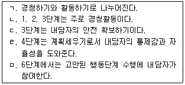
- ㄴ, ㄹ
- ㄱ, ㄴ, ㅁ
- ㄱ, ㄷ, ㅁ
- ㄷ, ㄹ, ㅁ
- ㄱ, ㄴ, ㄹ, ㅁ
(정답률: 알수없음)
102. 위기개입의 원리로 옳지 않은 것은?
- 개입 기술은 적극적이며 행동에 초점을 둔다.
- 평형상태를 회복하고 성격변화에 초점을 둔다.
- 시간제한적인 속성이 있어 즉각적인 개입이 필요하다.
- 내담자가 해결 가능성에 대한 희망과 기대를 갖도록 돕는다.
- 내담자에게 도움이 되는 정보를 제공하고 사회관계망을 확충하도록 돕는다.
(정답률: 알수없음)
103. 위기이론의 기본 가정에 관한 설명으로 옳지 않은 것은?
- 일반적으로 위험한 사건에 의해 유발된다.
- 인생초기의 미해결된 갈등과 연결될 수 있다.
- 상담자는 수동적이고 중립적이기보다는 적극적이어야 한다.
- 위기상황의 심한 불균형상태는 일반적으로 4주에서 6주까지 지속된다.
- 위기상황이 해결되는 동안 개인은 도움에 대해 방어적이고 폐쇄적이다.
(정답률: 알수없음)
104. 학교 현장에서 위기를 다루는 상담자를 위한 일반적인 지침으로 옳지 않은 것은?
- 잠재적 위기학생을 수시로 확인한다.
- 위기 상황에 대해 긍정적인 태도를 취한다.
- 상담자 자신의 감정반응을 인지하고 안정시킨다.
- 위기에 처한 학생, 직원, 학부모의 감정을 인지한다.
- 위기의 종류와 상관없이 발생한 일에 대해 공론화한다.
(정답률: 알수없음)
1⑤. 위기개입에 대한 인지행동치료에 관한 설명으로 옳은 것을 모두 고른 것은?
- ㄴ, ㄹ
- ㄱ, ㄴ, ㄷ
- ㄱ, ㄷ, ㄹ
- ㄴ, ㄷ, ㄹ
- ㄱ, ㄴ, ㄷ, ㄹ
(정답률: 알수없음)
106. 트라우마 체계 치료(Trauma Systems Therapy)에서 내담자의 정서 상태를 평가하는 4개 단계에 해당되지 않는 것은?
- 조절하기(regulating)
- 활성화하기(reviving)
- 재구성하기(reconstituting)
- 재경험하기(reexperiencing)
- 재개념화하기(reconceptualizing)
(정답률: 알수없음)
107. 부모로부터 신체폭력을 당한 아동이 청소년기에 보일 수 있는 PTSD에 대하여 DSM-5상 증상으로 옳은 것을 모두 고른 것은?
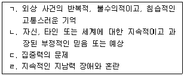
- ㄱ, ㄴ
- ㄷ, ㄹ
- ㄱ, ㄴ, ㄷ
- ㄴ, ㄷ, ㄹ
- ㄱ, ㄴ, ㄷ, ㄹ
(정답률: 알수없음)
108. 더스펠더와 스트릭랜드(L. DeSpelder & A. Strickland)의 자살 유형 중 다음에 해당하는 유형은?
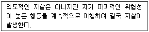
- 청산형 자살
- 도피처로서의 자살
- 반의도적ㆍ만성적 자살
- 구원 요청으로서의 자살
- 우울과 정신장애에 따른 자살
(정답률: 알수없음)
109. 한부모가정 자녀에게 나타나는 부모화 현상에 관한 설명으로 옳은 것을 모두 고른 것은?
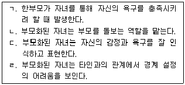
- ㄱ, ㄴ, ㄷ
- ㄱ, ㄴ, ㄹ
- ㄱ, ㄷ, ㄹ
- ㄴ, ㄷ, ㄹ
- ㄱ, ㄴ, ㄷ, ㄹ
(정답률: 알수없음)
110. 만성적 부부갈등에 노출된 청소년이 겪을 수 있는 DSM-5상 파괴적 기분조절부전장애(Disruptive Mood Dysregulation Disorder)에 관한 진단 기준으로 옳지 않은 것은?
- 13세 이상이어야 진단할 수 있다.
- 주요 증상이 10세 이전에 시작된다.
- 발달단계에서 예상할 수 있는 수준 이상의 분노발작을 보인다.
- 언어적 또는 행동적으로 심한 분노 발작이 반복적으로 나타난다.
- 분노는 상황이나 촉발자극에 비해 그 강도나 지속기간이 현저하게 과도하다.
(정답률: 알수없음)
111. 가출청소년 상담 시 상담자의 개입 방안으로 옳은 것은?
- 정신상태검사(MSE)를 우선 실시한다.
- 가족과 재결합하는 것을 일차 목표로 한다.
- 신체적 안전 욕구가 충족되고 있는지를 관찰한다.
- 청소년보호시설 입소 여부에 대한 결정을 대신해 준다.
- 가출 중인 다른 청소년과 사회적 지지망을 형성시켜 준다.
(정답률: 알수없음)
112. 성폭력을 당한 청소년을 심리평가한 결과 급성스트레스장애(Acute Stress Disorder)로 의심된다. DSM-5상 진단 기준으로 옳은 것을 모두 고른 것은?
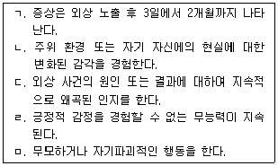
- ㄱ, ㄷ
- ㄴ, ㄹ
- ㄷ, ㅁ
- ㄱ, ㄴ, ㄹ
- ㄴ, ㄷ, ㄹ, ㅁ
(정답률: 알수없음)
113. 학교폭력 피해학생을 위기상담할 때 유의사항으로 옳지 않은 것은?
- 사건접수 시 피해학생의 안전을 우선적으로 확보한다.
- 학교폭력 처리절차를 안내하되 현실적 한계에 대하여 안내한다.
- 피해학생의 욕구를 정확히 파악하고 제공할 상담서비스를 결정한다.
- 피해학생이 신체적 고통이나 정서적 혼란을 경험할 경우 응급조치를 취한다.
- 사건 해결을 위해 쌍방간 이해하고 용서하는 마음이 선행되어야 한다는 것을 알린다.
(정답률: 알수없음)
114. 학교폭력 가해학생을 상담할 때 개입 방안으로 옳지 않은 것은?
- 사실관계를 확인하기 위해 피해학생을 동석시킨다.
- 피해학생이 처한 어려움에 대해 알 수 있도록 상담한다.
- 가해학생이 폭력 유발 환경으로부터 벗어날 수 있도록 지원한다.
- 가해자로 지목된 경우라도 가해자라고 단정적으로 표현하는 것을 삼간다.
- 가해학생을 위해 최선을 다할 것을 인식시키되 학교폭력처리 절차에 대해서 분명하게 안내한다.
(정답률: 알수없음)
115. 멕케나(S. McKenna)가 제안한 애도의 6단계를 순서대로 바르게 나열한 것은?
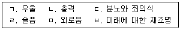
- ㄴ - ㄷ - ㄹ - ㄱ - ㅁ - ㅂ
- ㄴ - ㄷ - ㄹ - ㅁ - ㄱ - ㅂ
- ㄴ - ㄹ - ㄷ - ㅁ - ㄱ - ㅂ
- ㄴ - ㄹ - ㅁ - ㄷ - ㄱ - ㅂ
- ㄴ - ㅁ - ㄹ - ㄱ - ㄷ - ㅂ
(정답률: 알수없음)
116. 학생을 대상으로 자살예방교육을 운영할 때 유의사항으로 옳지 않은 것은?
- 자살 위험요인과 위험징후를 알려준다.
- 위기 시 어른에게 도움을 요청하도록 안내한다.
- 자살이 문제의 해결책으로 들리지 않도록 조심한다.
- 자살자의 죽음에 대해 학생들이 책임감을 느끼도록 한다.
- 자살사고와 감정이 우울증이나 양극성장애와 같은 정신장애의 일부임을 인식시킨다.
(정답률: 알수없음)
117. 학교 내에서 학생 자살이 발생한 직후 학교 차원의 후속 조치로 옳은 것은?
- 학교 내에서 추도식을 진행한다.
- 자살사건에 대해 자세히 설명한다.
- 죽은 학생에 대해 낭만적으로 묘사한다.
- 학생의 죽음을 학내 방송을 통해 알린다.
- 학생들이 자살 긴급전화에 대하여 알고 있는지 확인한다.
(정답률: 알수없음)
118. 다음에서 설명하는 모델은?
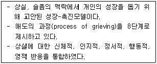
- 큐빅(cubic) 모델
- 듀트로(Dutro) 모델
- 슈나이더(Schneider) 모델
- 바우마이스터(Baumeister) 모델
- 큐블러-로스(Kübler-Ross) 모델
(정답률: 알수없음)
119. 다음 밑줄 친 내용에서 K양이 보인 인지적 오류는?
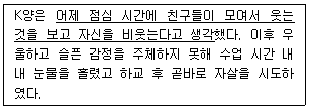
- 융합(confluence)
- 내사(introjection)
- 개인화(personalization)
- 역전이(countertransference)
- 흑백논리(all-or-nothing thinking)
(정답률: 알수없음)
120. 자살의도 없이 자해를 하는 청소년의 자해 동기로 옳지 않은 것은?
- 긴장을 완화시키고 싶은 마음
- 삶의 통제권을 얻고 싶은 욕구
- 무망감으로부터 삶을 끝내고 싶은 마음
- 또래에게 인정받고 싶거나 소속되고 싶은 욕구
- 영광의 상처(battle scars)를 보여주고 싶은 마음
(정답률: 알수없음)